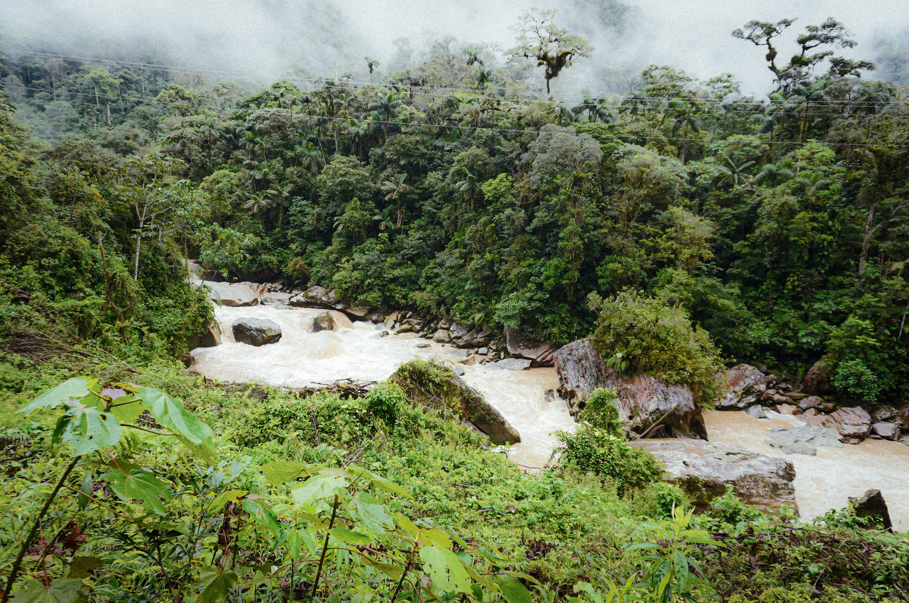

La Amazonía de Zamora Chinchipe es uno de los ecosistemas más biodiversos del planeta. Trabajar en este territorio nos impone la más alta responsabilidad ambiental. Hidroriente integra desde su diseño los más estrictos estándares de gestión y protección ambiental.
Contamos con un Plan de Manejo Ambiental (PMA) aprobado y en cumplimiento permanente, con auditorías periódicas y transparencia en todos nuestros reportes.
Operamos con un conjunto integral de programas que cubren todos los componentes del ecosistema amazónico.
Red de estaciones de monitoreo de agua, aire, suelo y biodiversidad. Reportes periódicos y transparentes de los indicadores del área de influencia.
Programa con especies nativas de la Amazonía. Producción en vivero, siembra y seguimiento de más de 5.000 plantas en zonas de compensación.
Protocolos de rescate y relocalización de fauna silvestre. Inventarios de biodiversidad y monitoreo de especies endémicas.
Monitoreo permanente de la calidad fisicoquímica y biológica del río Alto Machinaza. Control de caudales ecológicos.
Sistema integral de gestión de residuos sólidos y líquidos. Manejo diferenciado, reciclaje y disposición final adecuada.
Talleres y programas de sensibilización en comunidades y escuelas del área de influencia del proyecto.
Generamos energía renovable sin comprometer el ecosistema amazónico.
Ver noticias ambientales